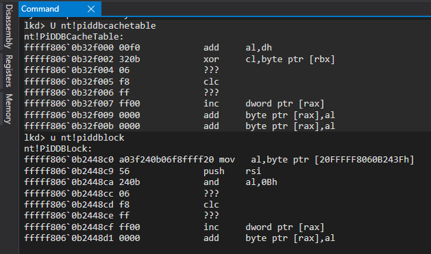
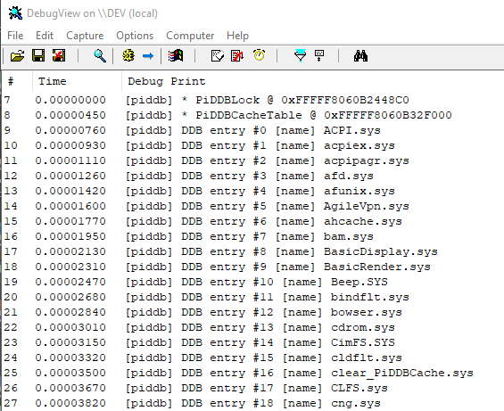
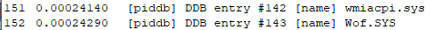
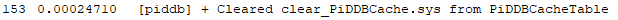
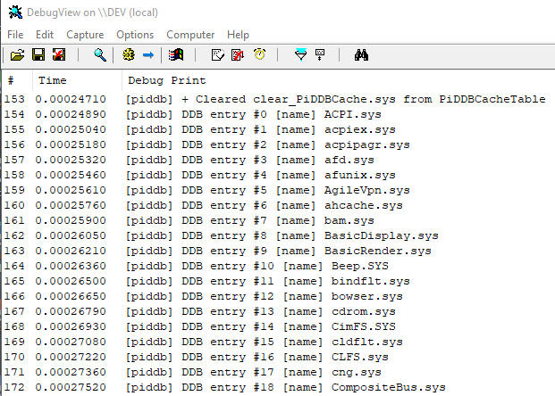
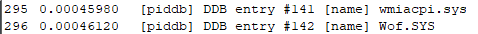

# PiDDBCacheTable
•
https://github.com/BadPlayer555/TraceCleaner - Source
•
https://www.unknowncheats.me/forum/anti-cheat-bypass/324665-clearing-piddbcachetable.html - About + source
•
https://github.com/vectless/kernelmode-driver/blob/0ab324dd7dcf519697472cb56a5c23f0602abc6e/kernelmode/clear.cpp#L367 - Source
•
https://guidedhacking.com/threads/how-to-clear-piddbcache-table-piddblock.16034/ - Explanation + source
•
https://www.unknowncheats.me/forum/anti-cheat-bypass/402755-piddbcachetable-signature-windows.htmlDDB stands for Defective Driver Database.
I don't understand its purpose. There's lots of refernces to "blocked" drivers in the XP source leak.
Regardless, the DDB cache keeps a list of drivers on the sytem.
It seems like when a new driver is loaded it adds that driver to the DDB cache.
Remove yourself from that list to erase traces of your driver.
In the Windows XP source leak, DDB cache stuff can be found in
NT\base\ntos\io\pnpmgr\ppdrvdb.cIf in IDA, open up ntoskrnl.exe and press
G and jump to
PiDDBCacheTable.
X for cross refernces and you'll find the Pi functions.
## Verify Addresses
You can verify the addresses of PiDDBCacheTable and PiDDBLock
on your version of Windows using WinDbg.
## Demo
I first list the drivers in the DDB cache. It's order alphatically.
You can see our driver at item #16.
The total number of drivers in the cache is 144 (starting from 0)
I then clear our driver from the cache.
And list the drivers again.
You can see our driver has been removed from the list (item #16 is now the next driver)
We can also see the total number of drivers has decreased by 1.
## Code
/*
DDB stands for Defective Driver Database.
I don't understand its purpose. Lots of refernces to "blocked" drivers.
Regardless, the DDB cache keeps a list of drivers on the sytem.
Remove yourself from that list to erase traces of yourself.
*/
#include <ntddk.h>
#include <windef.h>
#include <ntimage.h>
#include "nt.h"
#define Dbg(...) DbgPrintEx( DPFLTR_SYSTEM_ID, DPFLTR_ERROR_LEVEL, "[piddb] " __VA_ARGS__ )
typedef struct _DDBCACHE_ENTRY
{
LIST_ENTRY List;
UNICODE_STRING DriverName;
ULONG TimeDateStamp;
NTSTATUS LoadStatus;
char _0x0028[16]; // Data from the shim engine, or uninitialized memory for custom drivers
} DDBCACHE_ENTRY, * PDDBCACHE_ENTRY;
// ---------------------------------------------------------
// Util
// ---------------------------------------------------------
PVOID FindModuleBase(char* module_name)
{
PVOID module_base = NULL;
ULONG buffer_size = 8;
PVOID info_buffer = ExAllocatePool2(POOL_FLAG_NON_PAGED, buffer_size, '1luL');
// Enumerate the loaded modules on the system
ULONG return_len = 0;
NTSTATUS status = ZwQuerySystemInformation(
SystemModuleInformation,
info_buffer,
buffer_size,
&return_len
);
if (status == STATUS_INFO_LENGTH_MISMATCH)
{
// Resize buffer to store returned information
// and try again
ExFreePool(info_buffer);
buffer_size = return_len;
info_buffer = ExAllocatePool2(POOL_FLAG_NON_PAGED, buffer_size, '2luL');
status = ZwQuerySystemInformation(
SystemModuleInformation,
info_buffer,
buffer_size,
&return_len
);
}
if (!NT_SUCCESS(status))
{
ExFreePool(info_buffer);
return NULL;
}
// Loop through modules
PRTL_PROCESS_MODULES modules = (PRTL_PROCESS_MODULES)info_buffer;
for (ULONG i = 0; i < modules->NumberOfModules; i++)
{
char* name = (char*)modules->Modules[i].FullPathName + modules->Modules[i].OffsetToFileName;
if (strcmp(name, module_name) == 0)
{
// If we've found the desired module, save its base address
module_base = modules->Modules[i].ImageBase;
}
}
ExFreePool(info_buffer);
return module_base;
}
BOOL CheckMask(PCHAR base, PCHAR pattern, PCHAR mask)
{
while (*mask != 0)
{
if (*mask == 'x' && *base != *pattern)
return FALSE;
++base;
++pattern;
++mask;
}
return TRUE;
}
PVOID FindPattern(PCHAR base, DWORD length, PCHAR pattern, PCHAR mask)
{
length -= (DWORD)strlen(mask);
for (DWORD i = 0; i < length; ++i)
{
PVOID addr = &base[i];
if (CheckMask(addr, pattern, mask) == TRUE)
return addr;
}
return NULL;
}
PVOID FindPatternInModule(PCHAR module_base, PCHAR pattern, PCHAR mask)
{
PVOID pattern_addr = NULL;
// Grab sections in module and loop through
PIMAGE_NT_HEADERS nt_header = (PIMAGE_NT_HEADERS)(module_base + ((PIMAGE_DOS_HEADER)module_base)->e_lfanew);
PIMAGE_SECTION_HEADER section = IMAGE_FIRST_SECTION(nt_header);
for (DWORD i = 0; i < nt_header->FileHeader.NumberOfSections; i++)
{
if (*(PINT)section->Name == 'EGAP' || memcmp(section->Name, ".text", 5) == 0)
{
// If we've found the .text section, search for our pattern
pattern_addr = FindPattern(module_base + section->VirtualAddress, section->Misc.VirtualSize, pattern, mask);
if (pattern_addr != NULL)
break;
}
// Advance to next section
section += 1;
}
return pattern_addr;
}
/*
A RIP relative address is @ RIP + relative_address.
RIP points to the next instruction, so do
current_address + current_instruction_size to find RIP, and then add the relative address.
Params:
base_addr - Start of the instruction in which the relative address is
offset - Offset to the relative address from the base_addr
instruction_size - Size of the instruction @ base_addr. Grab with IDA/x64dbg/etc.
*/
PVOID ResolveRelativeAddress(DWORD64 base_addr, int offset, int instruction_size)
{
DWORD64 rip = base_addr + instruction_size;
DWORD32 relative_addr = *(PDWORD32)(base_addr + offset);
PVOID absolute_addr = (PVOID)(rip + relative_addr);
return absolute_addr;
}
// ---------------------------------------------------------
// Main
// ---------------------------------------------------------
void FindDDBCacheAndLock(OUT PERESOURCE* PiDDBLock, PRTL_AVL_TABLE* PiDDBCacheTable)
{
PVOID ntoskrnl_base = FindModuleBase("ntoskrnl.exe");
// SIGNATURES ARE FOR Windows 10 x64 20H2 19042.1052
PVOID PiDDBLock_tmp = FindPatternInModule(
ntoskrnl_base,
"\x48\x8D\x0D\x00\x00\x00\x00\xE8\x00\x00\x00\x00\x4C\x8B\x8C",
"xxx????x????xxx"
);
PVOID PiDDBCacheaTable_tmp = FindPatternInModule(
ntoskrnl_base,
"\x66\x03\xD2\x48\x8D\x0D",
"xxxxxx"
);
PVOID PiDDBLock_addr = ResolveRelativeAddress((DWORD64)PiDDBLock_tmp, 3, 7);
PVOID PiDDBCacheTable_addr = ResolveRelativeAddress((DWORD64)PiDDBCacheaTable_tmp, 6, 10);
*PiDDBLock = (PERESOURCE)PiDDBLock_addr;
*PiDDBCacheTable = (PRTL_AVL_TABLE)PiDDBCacheTable_addr;
Dbg("* PiDDBLock @ 0x%p \n", PiDDBLock_addr);
Dbg("* PiDDBCacheTable @ 0x%p \n", PiDDBCacheTable_addr);
return;
}
void ListDDBCache(PERESOURCE PiDDBLock, PRTL_AVL_TABLE PiDDBCacheTable)
{
// Lock DDB access
KeEnterCriticalRegion();
ExAcquireResourceExclusiveLite(PiDDBLock, TRUE);
// Enumerate all entries in DDB cache
PDDBCACHE_ENTRY entry = NULL;
int i = 0;
for (
entry = (PDDBCACHE_ENTRY)RtlEnumerateGenericTableAvl(PiDDBCacheTable, TRUE);
entry != NULL;
entry = (PDDBCACHE_ENTRY)RtlEnumerateGenericTableAvl(PiDDBCacheTable, FALSE)
)
{
Dbg("DDB entry #%d [name] %wZ \n", i, entry->DriverName);
i++;
}
// Unlock DDB access
ExReleaseResourceLite(PiDDBLock);
KeLeaveCriticalRegion();
return;
}
void RemoveDriverFromDDBCache(PRTL_AVL_TABLE PiDDBCacheTable, PERESOURCE PiDDBLock, const wchar_t* driver_name)
{
// Build a cache entry about our driver
UNICODE_STRING name = { 0 };
RtlInitUnicodeString(&name, driver_name);
DDBCACHE_ENTRY search = { 0 };
search.DriverName = name;
// Lock DDB access
KeEnterCriticalRegion();
ExAcquireResourceExclusiveLite(PiDDBLock, TRUE);
PDDBCACHE_ENTRY driver_entry = (PDDBCACHE_ENTRY)RtlLookupElementGenericTableAvl(PiDDBCacheTable, &search);
if (driver_entry != NULL)
{
// Unlink and delete AVL node
RemoveEntryList(&driver_entry->List);
RtlDeleteElementGenericTableAvl(PiDDBCacheTable, driver_entry);
Dbg("+ Cleared %wZ from PiDDBCacheTable \n", name);
}
else
Dbg("- Failed to find %wZ in PiDDBCacheTable \n", name);
// Unlock DDB access
ExReleaseResourceLite(PiDDBLock);
KeLeaveCriticalRegion();
return;
}
void DriverUnload(PDRIVER_OBJECT DriverObject)
{
// Nothing to delete
UNREFERENCED_PARAMETER(DriverObject);
Dbg("+ Unloaded driver \n");
}
NTSTATUS DriverEntry(PDRIVER_OBJECT DriverObject, PUNICODE_STRING RegistryPath)
{
UNREFERENCED_PARAMETER(RegistryPath);
NTSTATUS status = STATUS_SUCCESS;
// Not creating an io device and symbolic link
// because don't need to access from userland
DriverObject->DriverUnload = DriverUnload;
PERESOURCE PiDDBLock = NULL;
PRTL_AVL_TABLE PiDDBCacheTable = NULL;
FindDDBCacheAndLock(&PiDDBLock, &PiDDBCacheTable);
if (PiDDBLock == NULL || PiDDBCacheTable == NULL)
{
Dbg("- Failed to find PiDDBLock (0x%p) or PiDDBCacheTable (0x%p) \n", PiDDBLock, PiDDBCacheTable);
return 0x0;
}
ListDDBCache(PiDDBLock, PiDDBCacheTable);
RemoveDriverFromDDBCache(PiDDBCacheTable, PiDDBLock, L"clear_PiDDBCache.sys");
ListDDBCache(PiDDBLock, PiDDBCacheTable);
return status;
}